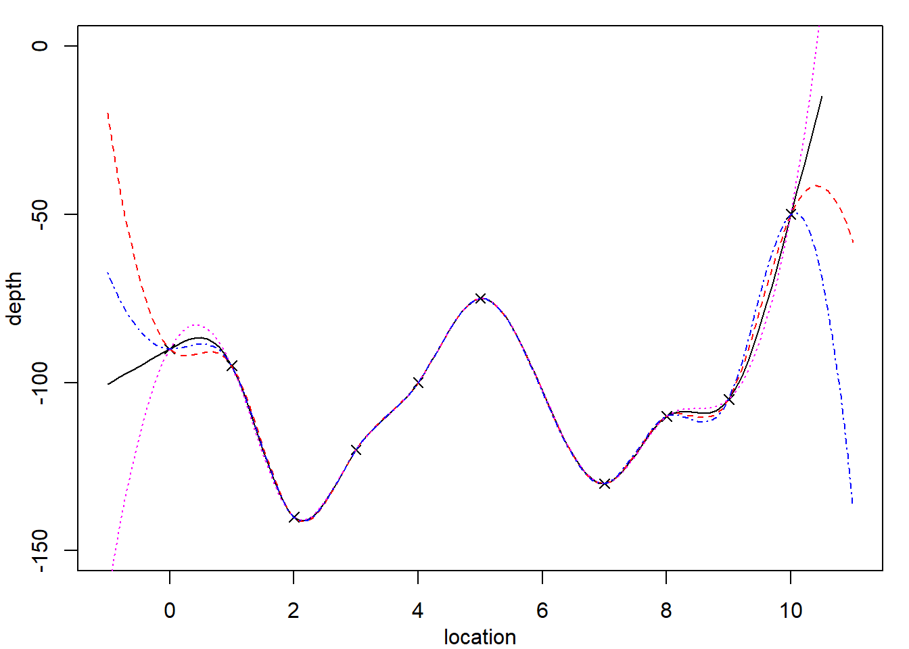

Chapter 1 considered general limitations of parametric models, and polynomial regression in particular (see Figure 1.1), which motivated the use of the more flexible spline models (see Figure 1.3) – though at that stage no mathematical details were presented. In Chapter 2, basic spline definitions were given, including the notation of smoothness constraints, and these ideas were further explored in the Exercises in Section 3.6. This chapter will now give mathematical details of the interpolating spline problem and consider application to data. A feature of all these interpolation methods is that they fit the data exactly and that the fitted functions are smooth. Figure 3.1, is cubic spline interpolation, which fits a cubic polynomial between successive data points such that the function, gradient and the curvature are all continuous at each data point. The solid line shows the fitted values within the range of the data, whereas the dashed line shows the fitted values outside the range of the data – extrapolation.
Figure 3.1: A cubic interpolating spline fitted to the coal-seam data, with the dashed line showing extrapolation.
3.2 Natural splines
Suppose we have \(n\) observations \(\{y_1,\dots,y_m\}\) at locations \(\{t_1,\dots,x_m\}\). We can construct a cubic spline (that is with \(p=3\)) to pass through (interpolate) all the points \((t_i,y_i),\ i=1,\dots,m\). In fact, for any given set of points, there is an infinite number of cubic splines which interpolate them, see Figure 3.2 for examples. Exactly one of these splines has the property that, in the leftmost and rightmost intervals, it is a straight line. Such a spline is called a natural cubic spline.

Figure 3.2: Cubic interpolating splines fitted to the coal-seam data, with the dashed lines showing extrapolation – the natural spline is shown in solid black.
3.3 Properties of natural splines
Natural splines are a special case of polynomial splines of odd order \(p\). Thus we have natural linear splines (\(p=1\)), natural cubic splines (\(p=3\)), etc. A spline is said to be natural if, beyond the boundary knots \(t_1\) and \(t_{m}\), its \((p+1)/2\) higher-order derivatives are zero: \[
f^{(j)}(t) = 0,
\tag{3.1}\] for \(j={(p+1)}/{2},\ldots,p\) and either \(t \leq t_1\) or \(t \geq t_m\).
Thus a natural spline of order \(p\) has the following \(p+1\) constraints, in addition to those of Equation 2.2 : \[
\lim _{\epsilon\rightarrow 0} f^{(\ell)}(t_1-\epsilon)
=
\lim _{\epsilon\rightarrow 0} f^{(\ell)}(t_m+\epsilon) =0,
\tag{3.2}\] for \(\ell={(p+1)}/{2},\ldots,p\).
In particular,
a natural linear spline has \(p+1=2\) additional constraints: \[
\lim _{\epsilon\rightarrow 0} f^{(1)}(t_1-\epsilon)
=
\lim _{\epsilon\rightarrow 0} f^{(1)}(t_m+\epsilon) =0,
\tag{3.3}\] implying that \(f(t)\) is constant in the outer intervals of a natural linear spline,
a natural cubic spline has \(p+1=4\) additional constraints: \[
\lim _{\epsilon\rightarrow 0} f^{(2)}(t_1-\epsilon) = \lim _{\epsilon\rightarrow 0} f^{(2)}(t_m+\epsilon) =0,
\]\[
\lim _{\epsilon\rightarrow 0} f^{(3)}(t_1-\epsilon) = \lim _{\epsilon\rightarrow 0} f^{(3)}(t_m+\epsilon) =0,
\tag{3.4}\] implying that \(f(t)\) is linear in the outer intervals of a natural cubic spline.
The total degrees of freedom of a natural spline is, starting from Equation 2.3, but taking into account the additional \(p+1\) additional constraints is \[
\text{df}_{\text{nat.spline}} = m+p+1 - (p+1) = m.
\tag{3.5}\] That is the degrees of freedom for natural splines equals \(m\) whatever the value of \(p\).
Proposition 3.1 Linear and cubic natural splines have the following representations:
Proof: Not covered here (but may be included later in the module if time allows).
3.4 Roughness penalties
An aim of spline models is to describe an unknown function using piecewise-polynomials which are smooth. In the previous section, smoothness was imposed by explicitly constraining specified high-order derivatives. An alternative approach is to measure and control the degree of smoothness of the splines. In practice the roughness of the spline is usually measured and one definition of roughness is: \[
J_\nu(f) = \int_{-\infty}^\infty \left[ f^{(\nu)}(t) \right]^2 \text{d}t
\tag{3.8}\] where \(\nu\geq 1\) is an integer and \(f^{(\nu)}\) denotes the \(\nu\)th derivative of \(f\). Thus \(f^{(1)}(t)\) denotes the first derivative and \(f^{(2)}(t)\) denotes the second derivative of \(f\).
Intuitively, roughness measures the “wiggliness” of a function.
Aim might be to find the smoothest function which interpolates the data points. Hence, an alternative approach to that in previous sections is to find the function \(f\) which minimizes Equation 3.8 and satisfies \(f(t_i)=y_i\) for \(i=1,\dots,m\). We refer to the solutions of this problem as the optimal interpolating function.
It turns out that there is a very close link between \(J_\nu(\cdot)\) and \(p\)th-order natural splines, where \(p=2\nu-1\) (so \(p\) is odd). Important special cases are: \(\nu=1\) and \(p=1\), and \(\nu=2\) and \(p=3\). This relationship is defined in the following proposition.
Proposition 3.2 The optimal interpolating function is a \(p\)th-order natural spline, where \(p = 2ν − 1\). That is, the natural spline \(f\) is the unique minimizer of \(J_\nu(f)\).
Proof: Not covered here (but may be included later in the module if time allows).
Comments
Linear and cubic interpolating splines are also of interest in numerical analysis, for example to interpolate tables of numbers.
The linear interpolating spline is simply the piecewise-linear path connecting the data points.
Of course, in the linear spline case, knot points are clearly visible as kinks in the interpolating function.
But, in the cubic spline case, knots points are invisible to the naked eye. Hence, in general, there is little motivation to use higher-order splines.
Numerical considerations: the interpolating spline solutions involve matrix inversion. The inversion of an \(n \times n\) matrix involves \(O(n^3)\) operations – hence it is time consuming if \(n\) is large (for example, \(n=1000\) or \(10000\)). Fortunately there are tricks to reduce the computation to \(O(n)\).
3.5 Fitting interpolating splines in R
There are two main function within \(\mathbf{R}\) for fitting interpolating splines to data, which outputs fitted values for specified points or which returns an \(\mathbf{R}\)function which can be used directly by other commands, such as . The following illustrates the two approaches.
Code
set.seed(15342)par(mar=c(3,3,1,1), mgp=c(2,1,0))x =1:9; y =rnorm(9)# spline deals with pointsplot(x, y, xlim=c(0,10), ylim=c(-3,3), pch=4)mysplinefit1 =spline(x, y, method="natural")lines(mysplinefit1)# splinefun produces a functionplot(x, y, xlim=c(0,10), ylim=c(-3,3), pch=4)mysplinefit2 =splinefun(x, y, method="natural")curve(mysplinefit2, 0, 10, add=T)
(a) Using the spline command
(b) Using the splinefun command
Figure 3.3: R code for cubic interpolating splines.
The following, illustrates the different ways to draw the spline and to calculated fitted values.
Code
set.seed(15342)x =1:9; y =rnorm(9)# spline deals with pointsmysplinefit1 =spline(x, y, method="natural")spline(x, y, xout=c(2.5, 7.5), method="natural")
$x
[1] 2.5 7.5
$y
[1] 0.08785792 -0.78655273
Code
# splinefun produces a functionmysplinefit2 =splinefun(x, y, method="natural")mysplinefit2(c(2.5, 7.5))
[1] 0.08785792 -0.78655273
3.6 Exercises
Further questions will be added later.
3.1 For the situation shown in Figure 2.2, but taking \(p=1\), write-down the linear functions for the three intervals and clearly identify all the \(6\) model parameters. Next, write down the constraints required to make the functions pass through the \(m=2\) data points, and the two constraints which impose continuity of function. What additional constraints are needed to fix the first derivative at zero for the outer two intervals?
3.2 Continuing the problem described in Exercise 3.1, write the constraints as a system of 6 linear equations in the 6 unknown model parameters. How might you solve this system to give the parameter values which solve the interpolation problem?
3.3 Continuing the linear system described in Exercise 3.2, create a synthetic problem by choosing two data response values. Then solve the system in \({\mathbf R}\), or otherwise, and plot the fitted spline interpolating function.
3.4 Again, considering the situation shown in Figure 2.2, but taking \(p=1\). Using the alternative representation in Equation 3.6, write down two constraints involving the data points and the additional constraint on the \(b_i\) parameters. Write this linear system of 3 equations in three unknowns in matrix form.
3.5 Continuing the linear system described in Exercise 3.4, using the same points created in Exercise 3.4, calculate the parameter values in this new parameterization. Check that your two fitted interpolating spline give the same answers. Which approach do you prefer? Justify you answer.
3.6 Create you own version of the R code used to produce Figure 3.3 and experiment with the two alternative spline fitting commands. Remove the \(\texttt{set.seed(15342)}\) command so that you produce different data each time.
Comments